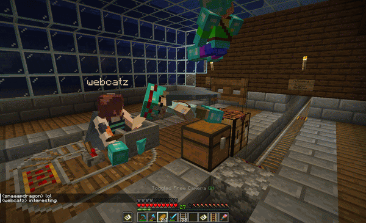
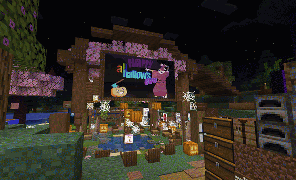
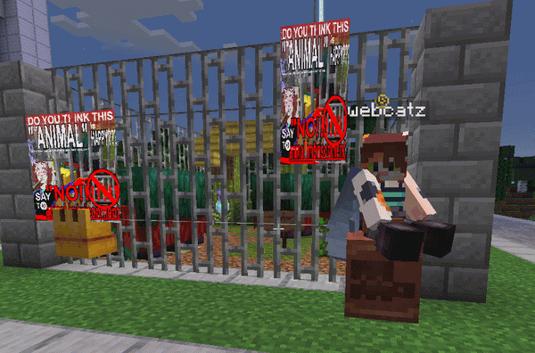
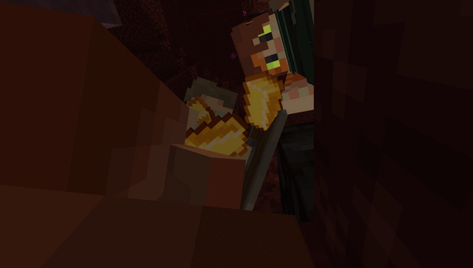
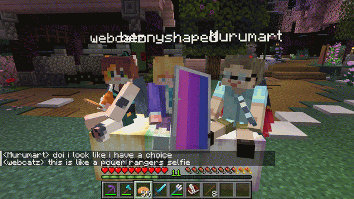
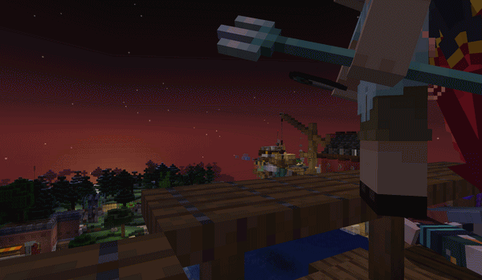
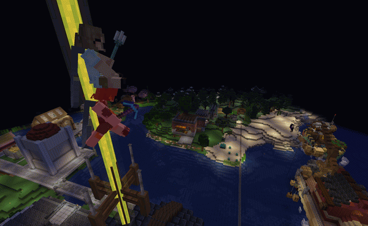
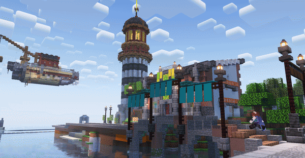

edit: here's some LOL...










hello! welcome to blog post #2. i'm coming up against the end of my week holiday with not a lot of the things i should've done actually done. still have that essay to finish... and my ed application to send... but the pressure is getting heavy enough that i'll have to get to work soon. (day of publishing update: i'm finishing it) doctors can you tell me how to do things without waiting for the deadline
what i've been doing instead over the week is mostly just playing a lot of minecraft. its got its teeth sunk into me good. tti has a minecraft server in which i've been having a lot of fun vibing with friends and building a little zone... i'll probably post pictures here at some point. expect that! maybe.








anyway the second glass beach album was announced a few days ago... feels kind of unreal! i've already known about it because of the really fun arg the band has been doing on their neocities but it's so cool for it to actually be finally properly announced! the snippets from the arg + the two singles that have dropped so far have gotten me really freaking excited for this album... whatever song the "mayfly" snippets belong to and (given its description) whalefall will both probably destroy me. LOL as if rare animal hasn't already given me brainrot... i will be insufferable for a while once this album drops i think.
on the topic of insufferability i've been slowly converting everyone around me to the magnus archives. i finished s4 two days ago and i still haven't really recovered from its finale... only one season left now... i'm in love this podcast i don't want it to end!!!!! my thoughts on the last few seasons are like. the shift away from the statements-based mystery into more audio drama was a bit disconcerting at first but the deeper character arcs (martin) that got to happen as a result have more than supplemented that fault. also i was a bit worried that as we got more classifications for the horrors that haunt the podcast the fear they caused would gradually fade away... and it does at first but then they turn the classifications upside down into raw existential horror in such a delicious way. podcast rating 10/10 listen now please ! i started making a shrine (not done yet but you can look at it if you want)